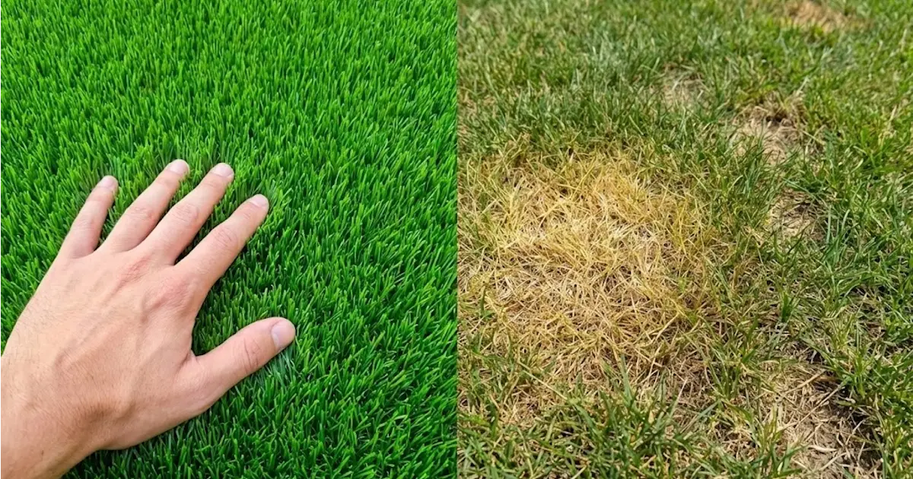

Grama Sintética vs. Natural: ¿Cuál cuida mejor tu bolsillo?
¿Te asusta la inversión inicial de la grama sintética? Debería asustarte más la "cuenta de cobro invisible" que pagas mes a mes con el pasto natural. Hicimos los números por ti.
Los Costos Ocultos que Nadie te Cuenta
Mantener un jardín verde en el clima de Colombia no es barato. A la larga, "lo natural sale caro" por tres factores críticos:
- Agua Potable: En la costa, regar a diario es un lujo costoso y poco ecológico.
- Mano de Obra: El jardinero, la poda, el abono y los pesticidas son una renta mensual fija.
- Reemplazo: El pasto natural muere por plagas o sequía y toca resembrar.
Tabla Comparativa de Retorno de Inversión
| Rubro | Grama Natural | Grama Sintética |
|---|---|---|
| Factura de Agua | $$$ (Alto Consumo) | $0 (Solo limpieza) ✅ |
| Jardinería Mensual | $$$ (Fijo) | $0 (Libre de Mant.) ✅ |
| Químicos/Abono | $$$ (Tóxicos) | $0 (Seguro) ✅ |
| Durabilidad | Incierta | 8-10 Años Garantizados ✅ |
Beneficios Inmediatos (Más allá del dinero)
Imagina tu jardín o terraza verde los 365 días del año, sin importar si llueve o hay sequía. Nuestras fibras tienen protección UV, memoria de recuperación y son Pet Friendly (fáciles de lavar si tienes mascotas).
Deja de tirar dinero en agua y jardineros
Cotiza hoy y recupera tu inversión en menos de 2 años.
VER CATÁLOGO DE PRECIOS